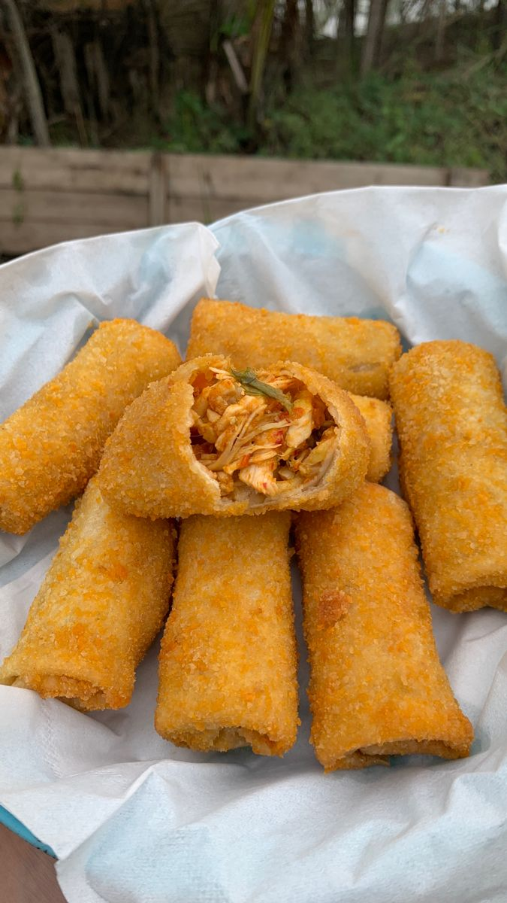
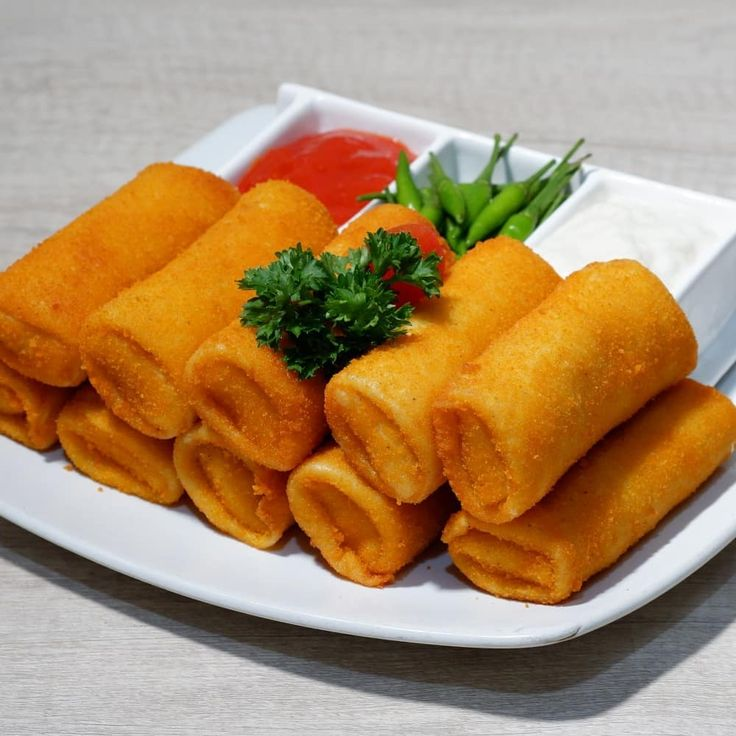
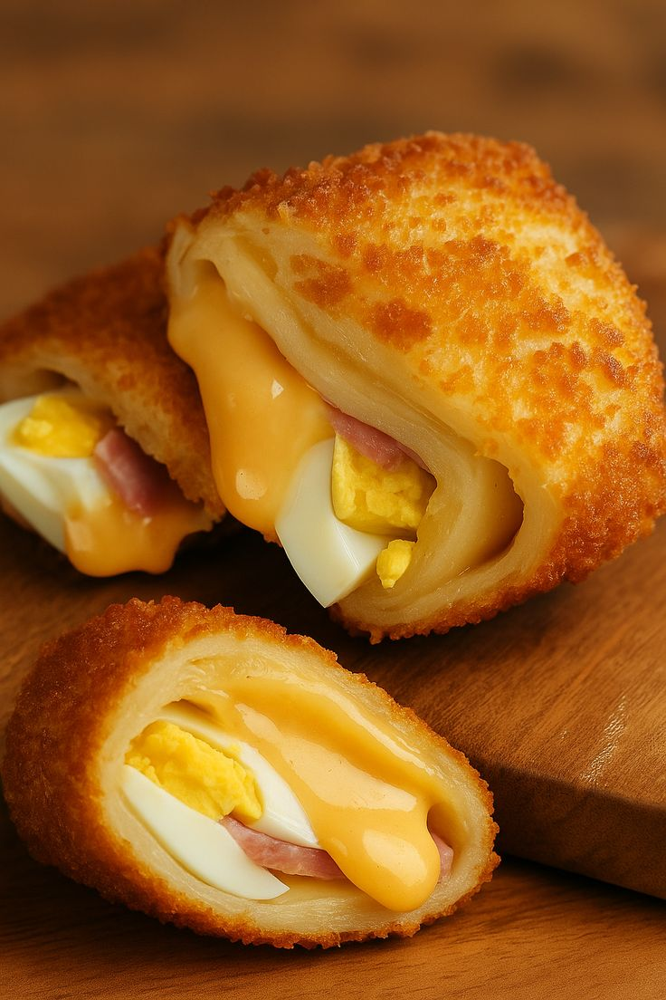

Risol Ayam Suwir
Risol isi ayam suwir pedas daun jeruk yang nikmat.
Rp4.000
UMKM Pekalongan
Risol lezat dan gurih dengan isian ayam dan mayo, cocok untuk temani kamu nugas.

Risol Gurih merupakan UMKM yang menyediakan berbagai pilihan risol dengan cita rasa gurih dan lezat. Produk yang tersedia antara lain Risol Ayam Suwir dan Risol Mayo.

Risol isi ayam suwir pedas daun jeruk yang nikmat.
Rp4.000

Dengan rasa yang Creamy, gurih, dan nikmat. Rasakan perpaduan mayo, telur, dan sosis dalam satu gigitan!
Rp3.000
Jam Buka: 09.00–21.00
Lokasi: Pekalongan, Jawa Tengah
Lokasi: Pekalongan, Jawa Tengah
Jam Layanan: 09.00–21.00
WhatsApp: Hubungi Risol Gurih melalui WhatsApp